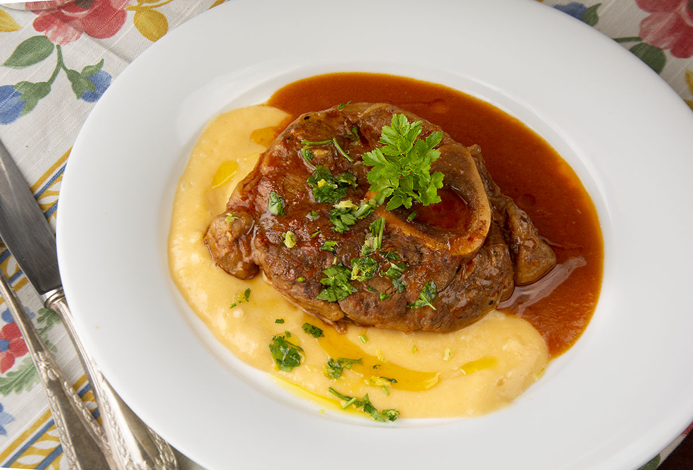
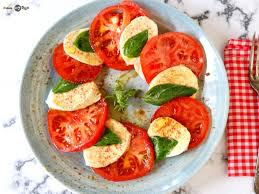

Gastronomía Italiana.
Presentación


Gastronomía Italiana. |
||
| Home | Gastronomia | Deportes | Cultura | | ||
| Comida | Imagen | Presentación |
| Pizza | |
La pizza no necesita presentación, todo el mundo conoce su inmensa variedad de ingredientes y sabores, que admite carnes, verduras, frutas, pescado, marisco, embutido y un largo etcétera. |
| Lasaña | |
Esta pasta cortada en láminas es otro de los platos estrella de la cocina italiana. Cada región italiana prepara diferentes versiones de lasaña. Las láminas se rellenan de bechamel y carne, pescado o verdura. Fundamental el queso gratinado que la suele cubrir y que le da un toque de lo más apetitoso. |
| Ossobuco |  | Este plato, originario de Milán, consiste en un estofado de jarrete de ternera no deshuesado, con una guarnición de zanahorias, cebollas, vino blanco y salsa de tomate. También es posible servirlo acompañado de un risotto a la milanesa o una polenta. |
| Sopa Minestrone | |
Esta popular sopa de verduras contiene pasta (normalmente, un tipo de pasta corta) y, en determinadas recetas, jamón, pollo o trozos de carne. Se elabora con verduras y hortalizas de temporada: zanahorias, cebollas, judías, apio, tomates… y presenta diferentes variedades en cada región de Italia. Se sirve con un poco de queso parmesano espolvoreado por encima. |
| Ensalada Caprese |  | Una deliciosa ensalada clásica hecha con ingredientes básicos: tomate, mozzarella fresca, unas hojas de albahaca y aceite de oliva. Su grandeza está en su sencillez, una combinación de ingredientes y de colores perfecta, que rebosa frescura. |
| Todos los derechos reservados 2025 © | ||